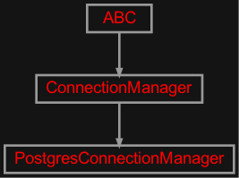

zensols.dbpg package#
Submodules#
zensols.dbpg.postgres#

Postgres implementation of the ConnectionManager.
- class zensols.dbpg.postgres.PostgresConnectionManager(db_name, host, port, user, password, create_db=True, capture_lastrowid=False, fast_insert=False)[source]#
Bases:
ConnectionManagerAn Postgres connection factory.
- DROP_SQL = 'drop owned by {user}'#
- EXISTS_SQL = "select count(*) from information_schema.tables where table_schema = 'public'"#
- __init__(db_name, host, port, user, password, create_db=True, capture_lastrowid=False, fast_insert=False)#
- drop()[source]#
Remove all objects from the database or the database itself.
For SQLite, this deletes the file. In database implementations, this might drop all objects from the database. Regardless, it is expected that
createis able to recreate the database after this action.- Returns:
whether the database was dropped
- execute_no_read(conn, sql, params=())[source]#
Return database level information such as row IDs rather than the results of a query. Use this when inserting data to get a row ID.
- Parameters:
conn – the connection object with the database
sql – the SQL statement used on the connection’s cursor
params – the parameters given to the SQL statement (populated with
?) in the statement
- See:
DbPersister.execute_no_read().- Return type:
- insert_rows(conn, sql, rows, errors, set_id_fn, map_fn)[source]#
Insert a tuple of rows in the database and return the current row ID.
- Parameters:
rows (
list) – a sequence of tuples of data (or an object to be transformed, seemap_fnin column order of the SQL provided by the entryinsert_nameerrors (
str) – if this is the stringraisethen raise an error on any exception when invoking the database execute, otherwise useignoreto ignore errorsset_id_fn – a callable that is given the data to be inserted and the row ID returned from the row insert as parameters
map_fn – if not
None, used to transform the given row in to a tuple that is used for the insertion
- Return type:
- Returns:
the
rowidof the last row inserted
See
InsertableBeanDbPersister.insert_rows().